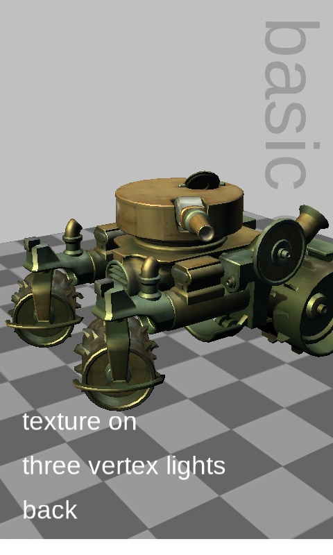

Reach Graphics Demo
Ported from Microsoft's XNA 4.0 Reach Graphics Demo, presented at MIX10.
Source for this sample on GitHub ↗

Play ▸Opens in a new tab and runs in this browser. Click or drag directly on the canvas.
About this sample
This touch-oriented showcase brings six XNA graphics features together behind one menu. Its scenes cover BasicEffect lighting and texturing, DualTextureEffect light maps, AlphaTestEffect impostors, SkinnedEffect animation, EnvironmentMapEffect reflections, and a SpriteBatch particle system.
The models, cube map, textures, fonts, animation data and sample-specific object graphs are loaded from the original XNA 4.0 content-pipeline output. That makes the demo a broad compatibility test as well as a compact tour of the Reach graphics profile.
Leave it untouched and the original MIX10 attract mode automatically moves through the scenes and their options, just as it did when the demo was used as an unattended conference kiosk.
Controls
| Action | Mouse or touch |
|---|---|
| Open a scene or toggle an option | Click or tap its menu row |
| Adjust a slider | Drag horizontally on its row |
| Rotate, zoom or emit particles | Drag on the scene background; behavior depends on the scene |
| Return to the title | Click or tap back |
Inactivity starts the automatic attract sequence.